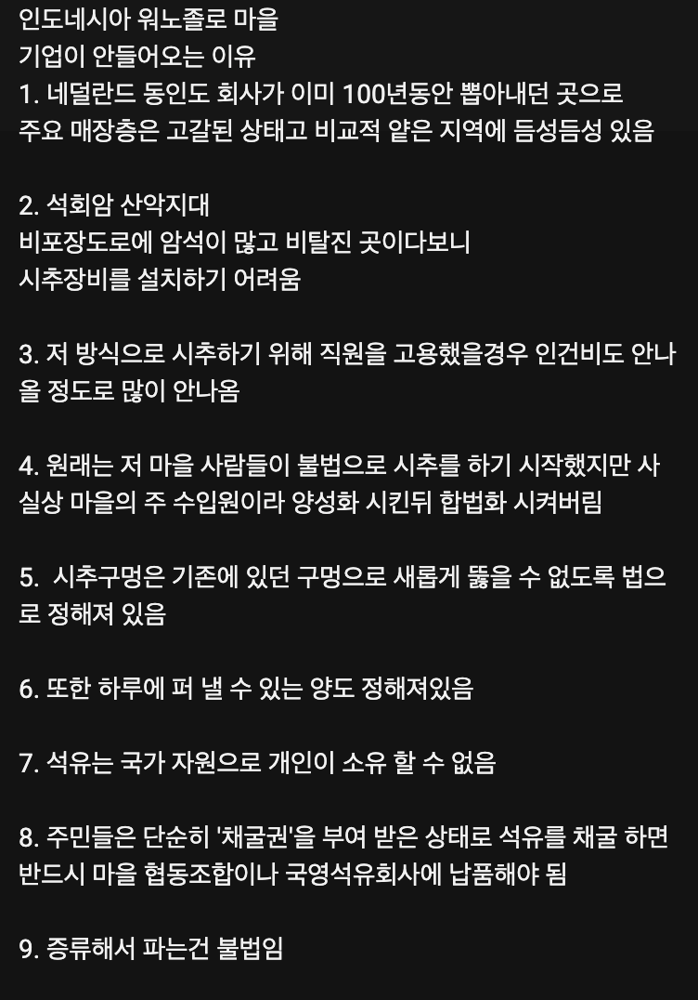
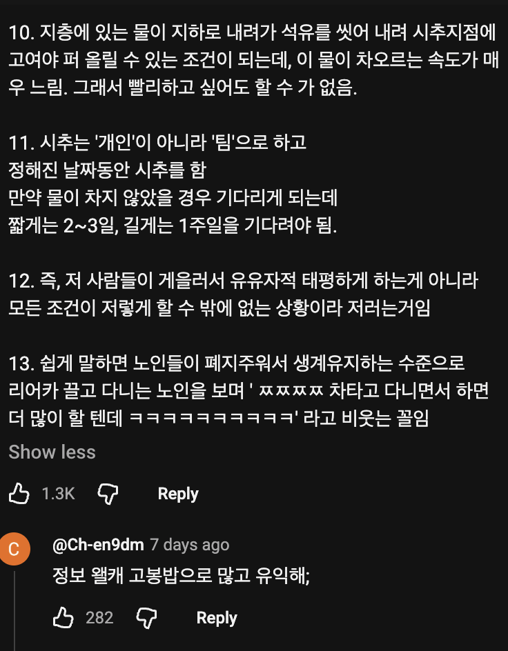

그정도 경제적 가치가 있음 국가든 기업이든 이미 들어갔겠지
닉값 ㄷㄷ
가내 수공업 ㄷㄷ
저렇게 소규모로 굴러 가는 유전들이 꽤 있더라. 나이지리아 같은 아프리카 나라들에도 저런 동네들 좀 있음.
헐 신기해
동부자바 Sidoajo 근처에 천연가스랑 진흙이 어마무시하게 나와서 인근 마을 서너개 매장된곳도 있음
나왔던 진흙으로 매장된 마을 빙 둘러서 제방같은걸로 아주 높게 쌓고 내부는 진흙을 계속 두는중
아직도 가스랑 진흙 나오는데다, 당시에 유럽쪽 기업이랑 일본기업이 이거 분석해주겠다고 (소문으론 무상으로 해주겠다) 했는데 인도네시아 정부가 하지 말라고 했다 함
현재는 인도네시아 에너지관련 공기업이 근처 있으면서 관리중인듯
___
지피티로 검색해보니 20년동안 분출중이고, 근처 지역의 천연가스 시추 탐색과 지진으로 인해 지저에 있던 진흙화산이 분화중인것에 가깝다네. 채산성은 제로에 가깝고 진흙은 둑으로 감당안되서 강에 버리고있다는듯.
지하 송유관 뚫은 건가 했네 ㅋㅋ
ㅉㅉㅉㅉ 정유회사가 시추하고 뽑으면 하면 더 많이 벌 텐데 ㅋㅋㅋㅋㅋㅋㅋㅋ
그냥 메이플 재획시켜
저 정보를 고봉밥을 주는 사람 ... 저기서 석유팔다온 사람인가보다 ... ㅋㅋㅋㅋ
채산성이 좆박았다는 소리군
ㅉㅉㅉ정제시설 설치하고 더 많이 뽑으면 잘살텐데ㅋㅋㅋㅋㅋㅋㅋㅋㅋㅋㅋ